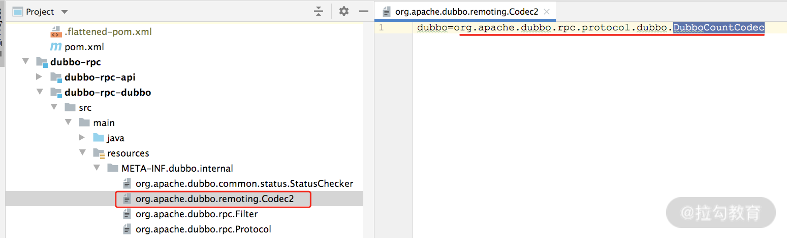
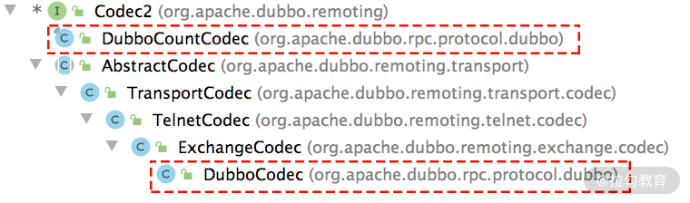
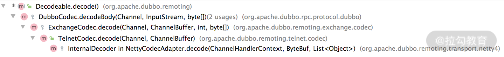

- 00 开篇词 深入掌握 Dubbo 原理与实现，提升你的职场竞争力.md.html
- 01 Dubbo 源码环境搭建：千里之行，始于足下.md.html
- 02 Dubbo 的配置总线：抓住 URL，就理解了半个 Dubbo.md.html
- 03 Dubbo SPI 精析，接口实现两极反转（上）.md.html
- 04 Dubbo SPI 精析，接口实现两极反转（下）.md.html
- 05 海量定时任务，一个时间轮搞定.md.html
- 06 ZooKeeper 与 Curator，求你别用 ZkClient 了（上）.md.html
- 07 ZooKeeper 与 Curator，求你别用 ZkClient 了（下）.md.html
- 08 代理模式与常见实现.md.html
- 09 Netty 入门，用它做网络编程都说好（上）.md.html
- 10 Netty 入门，用它做网络编程都说好（下）.md.html
- 11 简易版 RPC 框架实现（上）.md.html
- 12 简易版 RPC 框架实现（下）.md.html
- 13 本地缓存：降低 ZooKeeper 压力的一个常用手段.md.html
- 14 重试机制是网络操作的基本保证.md.html
- 15 ZooKeeper 注册中心实现，官方推荐注册中心实践.md.html
- 16 Dubbo Serialize 层：多种序列化算法，总有一款适合你.md.html
- 17 Dubbo Remoting 层核心接口分析：这居然是一套兼容所有 NIO 框架的设计？.md.html
- 18 Buffer 缓冲区：我们不生产数据，我们只是数据的搬运工.md.html
- 19 Transporter 层核心实现：编解码与线程模型一文打尽（上）.md.html
- 20 Transporter 层核心实现：编解码与线程模型一文打尽（下）.md.html
- 21 Exchange 层剖析：彻底搞懂 Request-Response 模型（上）.md.html
- 22 Exchange 层剖析：彻底搞懂 Request-Response 模型（下）.md.html
- 23 核心接口介绍，RPC 层骨架梳理.md.html
- 24 从 Protocol 起手，看服务暴露和服务引用的全流程（上）.md.html
- 25 从 Protocol 起手，看服务暴露和服务引用的全流程（下）.md.html
- 26 加餐：直击 Dubbo “心脏”，带你一起探秘 Invoker（上）.md.html
- 27 加餐：直击 Dubbo “心脏”，带你一起探秘 Invoker（下）.md.html
- 28 复杂问题简单化，代理帮你隐藏了多少底层细节？.md.html
- 29 加餐：HTTP 协议 + JSON-RPC，Dubbo 跨语言就是如此简单.md.html
- 30 Filter 接口，扩展 Dubbo 框架的常用手段指北.md.html
- 31 加餐：深潜 Directory 实现，探秘服务目录玄机.md.html
- 32 路由机制：请求到底怎么走，它说了算（上）.md.html
- 33 路由机制：请求到底怎么走，它说了算（下）.md.html
- 34 加餐：初探 Dubbo 动态配置的那些事儿.md.html
- 35 负载均衡：公平公正物尽其用的负载均衡策略，这里都有（上）.md.html
- 36 负载均衡：公平公正物尽其用的负载均衡策略，这里都有（下）.md.html
- 37 集群容错：一个好汉三个帮（上）.md.html
- 38 集群容错：一个好汉三个帮（下）.md.html
- 39 加餐：多个返回值不用怕，Merger 合并器来帮忙.md.html
- 40 加餐：模拟远程调用，Mock 机制帮你搞定.md.html
- 41 加餐：一键通关服务发布全流程.md.html
- 42 加餐：服务引用流程全解析.md.html
- 43 服务自省设计方案：新版本新方案.md.html
- 44 元数据方案深度剖析，如何避免注册中心数据量膨胀？.md.html
- 45 加餐：深入服务自省方案中的服务发布订阅（上）.md.html
- 46 加餐：深入服务自省方案中的服务发布订阅（下）.md.html
- 47 配置中心设计与实现：集中化配置 and 本地化配置，我都要（上）.md.html
- 48 配置中心设计与实现：集中化配置 and 本地化配置，我都要（下）.md.html
- 49 结束语 认真学习，缩小差距.md.html
- 捐赠
24 从 Protocol 起手，看服务暴露和服务引用的全流程（上）
在上一课时我们讲解了 Protocol 的核心接口，那本课时我们就以 Protocol 接口为核心，详细介绍整个 Protocol 的核心实现。下图展示了 Protocol 接口的继承关系：

Protocol 接口继承关系图
其中，AbstractProtocol提供了一些 Protocol 实现需要的公共能力以及公共字段，它的核心字段有如下三个。
- exporterMap（Map

groupServiceKeyCacheMap 结构图
- serverMap（Map
- invokers（Set
AbstractProtocol 没有对 Protocol 的 export() 方法进行实现，对 refer() 方法的实现也是委托给了 protocolBindingRefer() 这个抽象方法，然后由子类实现。AbstractProtocol 唯一实现的方法就是 destory() 方法，其首先会遍历 Invokers 集合，销毁全部的服务引用，然后遍历全部的 exporterMap 集合，销毁发布出去的服务，具体实现如下：
public void destroy() {
for (Invoker<?> invoker : invokers) {
if (invoker != null) {
invokers.remove(invoker);
invoker.destroy(); // 关闭全部的服务引用
}
}
for (String key : new ArrayList<String>(exporterMap.keySet())) {
Exporter<?> exporter = exporterMap.remove(key);
if (exporter != null) {
exporter.unexport(); // 关闭暴露出去的服务
}
}
}
export 流程简析
了解了 AbstractProtocol 提供的公共能力之后，我们再来分析Dubbo 默认使用的 Protocol 实现类—— DubboProtocol 实现。这里我们首先关注 DubboProtocol 的 export() 方法，也就是服务发布的相关实现，如下所示：
public <T> Exporter<T> export(Invoker<T> invoker) throws RpcException {
URL url = invoker.getUrl();
// 创建ServiceKey，其核心实现在前文已经详细分析过了，这里不再重复
String key = serviceKey(url);
// 将上层传入的Invoker对象封装成DubboExporter对象，然后记录到exporterMap集合中
DubboExporter<T> exporter = new DubboExporter<T>(invoker, key, exporterMap);
exporterMap.put(key, exporter);
... // 省略一些日志操作
// 启动ProtocolServer
openServer(url);
// 进行序列化的优化处理
optimizeSerialization(url);
return exporter;
}
1. DubboExporter
这里涉及的第一个点是 DubboExporter 对 Invoker 的封装，DubboExporter 的继承关系如下图所示：

DubboExporter 继承关系图
AbstractExporter 中维护了一个 Invoker 对象，以及一个 unexported 字段（boolean 类型），在 unexport() 方法中会设置 unexported 字段为 true，并调用 Invoker 对象的 destory() 方法进行销毁。
DubboExporter 也比较简单，其中会维护底层 Invoker 对应的 ServiceKey 以及 DubboProtocol 中的 exportMap 集合，在其 unexport() 方法中除了会调用父类 AbstractExporter 的 unexport() 方法之外，还会清理该 DubboExporter 实例在 exportMap 中相应的元素。
2. 服务端初始化
了解了 Exporter 实现之后，我们继续看 DubboProtocol 中服务发布的流程。从下面这张调用关系图中可以看出，openServer() 方法会一路调用前面介绍的 Exchange 层、Transport 层，并最终创建 NettyServer 来接收客户端的请求。
export() 方法调用栈
下面我们将逐个介绍 export() 方法栈中的每个被调用的方法。
首先，在 openServer() 方法中会根据 URL 判断当前是否为服务端，只有服务端才能创建 ProtocolServer 并对外服务。如果是来自服务端的调用，会依靠 serverMap 集合检查是否已有 ProtocolServer 在监听 URL 指定的地址；如果没有，会调用 createServer() 方法进行创建。openServer() 方法的具体实现如下：
private void openServer(URL url) {
String key = url.getAddress(); // 获取host:port这个地址
boolean isServer = url.getParameter(IS_SERVER_KEY, true);
if (isServer) { // 只有Server端才能启动Server对象
ProtocolServer server = serverMap.get(key);
if (server == null) { // 无ProtocolServer监听该地址
synchronized (this) { // DoubleCheck，防止并发问题
server = serverMap.get(key);
if (server == null) {
// 调用createServer()方法创建ProtocolServer对象
serverMap.put(key, createServer(url));
}
}
} else {
// 如果已有ProtocolServer实例，则尝试根据URL信息重置ProtocolServer
server.reset(url);
}
}
}
createServer() 方法首先会为 URL 添加一些默认值，同时会进行一些参数值的检测，主要有五个。
- HEARTBEAT_KEY 参数值，默认值为 60000，表示默认的心跳时间间隔为 60 秒。
- CHANNEL_READONLYEVENT_SENT_KEY 参数值，默认值为 true，表示 ReadOnly 请求需要阻塞等待响应返回。在 Server 关闭的时候，只能发送 ReadOnly 请求，这些 ReadOnly 请求由这里设置的 CHANNEL_READONLYEVENT_SENT_KEY 参数值决定是否需要等待响应返回。
- CODEC_KEY 参数值，默认值为 dubbo。你可以回顾 Codec2 接口中 @Adaptive 注解的参数，都是获取该 URL 中的 CODEC_KEY 参数值。
- 检测 SERVER_KEY 参数指定的扩展实现名称是否合法，默认值为 netty。你可以回顾 Transporter 接口中 @Adaptive 注解的参数，它决定了 Transport 层使用的网络库实现，默认使用 Netty 4 实现。
- 检测 CLIENT_KEY 参数指定的扩展实现名称是否合法。同 SERVER_KEY 参数的检查流程。
完成上述默认参数值的设置之后，我们就可以通过 Exchangers 门面类创建 ExchangeServer，并封装成 DubboProtocolServer 返回。
private ProtocolServer createServer(URL url) {
url = URLBuilder.from(url)
// ReadOnly请求是否阻塞等待
.addParameterIfAbsent(CHANNEL_READONLYEVENT_SENT_KEY, Boolean.TRUE.toString())
// 心跳间隔
.addParameterIfAbsent(HEARTBEAT_KEY, String.valueOf(DEFAULT_HEARTBEAT))
.addParameter(CODEC_KEY, DubboCodec.NAME) // Codec2扩展实现
.build();
// 检测SERVER_KEY参数指定的Transporter扩展实现是否合法
String str = url.getParameter(SERVER_KEY, DEFAULT_REMOTING_SERVER);
if (str != null && str.length() > 0 && !ExtensionLoader.getExtensionLoader(Transporter.class).hasExtension(str)) {
throw new RpcException("...");
}
// 通过Exchangers门面类，创建ExchangeServer对象
ExchangeServer server = Exchangers.bind(url, requestHandler);
... // 检测CLIENT_KEY参数指定的Transporter扩展实现是否合法(略)
// 将ExchangeServer封装成DubboProtocolServer返回
return new DubboProtocolServer(server);
}
在 createServer() 方法中还有几个细节需要展开分析一下。第一个是创建 ExchangeServer 时，使用的 Codec2 接口实现实际上是 DubboCountCodec，对应的 SPI 配置文件如下：

Codec2 SPI 配置文件
DubboCountCodec 中维护了一个 DubboCodec 对象，编解码的能力都是 DubboCodec 提供的，DubboCountCodec 只负责在解码过程中 ChannelBuffer 的 readerIndex 指针控制，具体实现如下：
public Object decode(Channel channel, ChannelBuffer buffer) throws IOException {
int save = buffer.readerIndex(); // 首先保存readerIndex指针位置
// 创建MultiMessage对象，其中可以存储多条消息
MultiMessage result = MultiMessage.create();
do {
// 通过DubboCodec提供的解码能力解码一条消息
Object obj = codec.decode(channel, buffer);
// 如果可读字节数不足一条消息，则会重置readerIndex指针
if (Codec2.DecodeResult.NEED_MORE_INPUT == obj) {
buffer.readerIndex(save);
break;
} else { // 将成功解码的消息添加到MultiMessage中暂存
result.addMessage(obj);
logMessageLength(obj, buffer.readerIndex() - save);
save = buffer.readerIndex();
}
} while (true);
if (result.isEmpty()) { // 一条消息也未解码出来，则返回NEED_MORE_INPUT错误码
return Codec2.DecodeResult.NEED_MORE_INPUT;
}
if (result.size() == 1) { // 只解码出来一条消息，则直接返回该条消息
return result.get(0);
}
// 解码出多条消息的话，会将MultiMessage返回
return result;
}
DubboCountCodec、DubboCodec 都实现了第 22 课时介绍的 Codec2 接口，其中 DubboCodec 是 ExchangeCodec 的子类。

DubboCountCodec 及 DubboCodec 继承关系图
我们知道 ExchangeCodec 只处理了 Dubbo 协议的请求头，而 DubboCodec 则是通过继承的方式，在 ExchangeCodec 基础之上，添加了解析 Dubbo 消息体的功能。在第 22 课时介绍 ExchangeCodec 实现的时候，我们重点分析了 encodeRequest() 方法，即 Request 请求的编码实现，其中会调用 encodeRequestData() 方法完成请求体的编码。
DubboCodec 中就覆盖了 encodeRequestData() 方法，按照 Dubbo 协议的格式编码 Request 请求体，具体实现如下：
protected void encodeRequestData(Channel channel, ObjectOutput out, Object data, String version) throws IOException {
// 请求体相关的内容，都封装在了RpcInvocation
RpcInvocation inv = (RpcInvocation) data;
out.writeUTF(version); // 写入版本号
String serviceName = inv.getAttachment(INTERFACE_KEY);
if (serviceName == null) {
serviceName = inv.getAttachment(PATH_KEY);
}
// 写入服务名称
out.writeUTF(serviceName);
// 写入Service版本号
out.writeUTF(inv.getAttachment(VERSION_KEY));
// 写入方法名称
out.writeUTF(inv.getMethodName());
// 写入参数类型列表
out.writeUTF(inv.getParameterTypesDesc());
// 依次写入全部参数
Object[] args = inv.getArguments();
if (args != null) {
for (int i = 0; i < args.length; i++) {
out.writeObject(encodeInvocationArgument(channel, inv, i));
}
}
// 依次写入全部的附加信息
out.writeAttachments(inv.getObjectAttachments());
}
RpcInvocation 实现了上一课时介绍的 Invocation 接口，如下图所示：

RpcInvocation 继承关系图
下面是 RpcInvocation 中的核心字段，通过读写这些字段即可实现 Invocation 接口的全部方法。
- targetServiceUniqueName（String类型）：要调用的唯一服务名称，其实就是 ServiceKey，即 interface/group:version 三部分构成的字符串。
- methodName（String类型）：调用的目标方法名称。
- serviceName（String类型）：调用的目标服务名称，示例中就是org.apache.dubbo.demo.DemoService。
- parameterTypes（Class<?>[]类型）：记录了目标方法的全部参数类型。
- parameterTypesDesc（String类型）：参数列表签名。
- arguments（Object[]类型）：具体参数值。
- attachments（Map
- attributes（Map
- invoker（Invoker<?>类型）：此次调用关联的 Invoker 对象。
- returnType（Class<?>类型）：返回值的类型。
- invokeMode（InvokeMode类型）：此次调用的模式，分为 SYNC、ASYNC 和 FUTURE 三类。
我们在上面的继承图中看到 RpcInvocation 的一个子类—— DecodeableRpcInvocation，它是用来支持解码的，其实现的 decode() 方法正好是 DubboCodec.encodeRequestData() 方法对应的解码操作，在 DubboCodec.decodeBody() 方法中就调用了这个方法，调用关系如下图所示：

decode() 方法调用栈
这个解码过程中有个细节，在 DubboCodec.decodeBody() 方法中有如下代码片段，其中会根据 DECODE_IN_IO_THREAD_KEY 这个参数决定是否在 DubboCodec 中进行解码（DubboCodec 是在 IO 线程中调用的）。
// decode request.
Request req = new Request(id);
... // 省略Request中其他字段的设置
Object data;
DecodeableRpcInvocation inv;
// 这里会检查DECODE_IN_IO_THREAD_KEY参数
if (channel.getUrl().getParameter(DECODE_IN_IO_THREAD_KEY, DEFAULT_DECODE_IN_IO_THREAD)) {
inv = new DecodeableRpcInvocation(channel, req, is, proto);
inv.decode(); // 直接调用decode()方法在当前IO线程中解码
} else { // 这里只是读取数据，不会调用decode()方法在当前IO线程中进行解码
inv = new DecodeableRpcInvocation(channel, req,
new UnsafeByteArrayInputStream(readMessageData(is)), proto);
}
data = inv;
req.setData(data); // 设置到Request请求的data字段
return req;
如果不在 DubboCodec 中解码，那会在哪里解码呢？你可以回顾第 20 课时介绍的 DecodeHandler（Transport 层），它的 received() 方法也是可以进行解码的，另外，DecodeableRpcInvocation 中有一个 hasDecoded 字段来判断当前是否已经完成解码，这样，三者配合就可以根据 DECODE_IN_IO_THREAD_KEY 参数决定执行解码操作的线程了。
如果你对线程模型不清楚，可以依次回顾一下 Exchangers、HeaderExchanger、Transporters 三个门面类的 bind() 方法，以及 Dispatcher 各实现提供的线程模型，搞清楚各个 ChannelHandler 是由哪个线程执行的，这些知识点在前面课时都介绍过了，不再重复。这里我们就直接以 AllDispatcher 实现为例给出结论。
- IO 线程内执行的 ChannelHandler 实现依次有：InternalEncoder、InternalDecoder（两者底层都是调用 DubboCodec）、IdleStateHandler、MultiMessageHandler、HeartbeatHandler 和 NettyServerHandler。
- 在非 IO 线程内执行的 ChannelHandler 实现依次有：DecodeHandler、HeaderExchangeHandler 和 DubboProtocol$requestHandler。
在 DubboProtocol 中有一个 requestHandler 字段，它是一个实现了 ExchangeHandlerAdapter 抽象类的匿名内部类的实例，间接实现了 ExchangeHandler 接口，其核心是 reply() 方法，具体实现如下：
public CompletableFuture<Object> reply(ExchangeChannel channel, Object message) throws RemotingException {
... // 这里省略了检查message类型的逻辑，通过前面Handler的处理，这里收到的message必须是Invocation类型的对象
Invocation inv = (Invocation) message;
// 获取此次调用Invoker对象
Invoker<?> invoker = getInvoker(channel, inv);
... // 针对客户端回调的内容，在后面详细介绍，这里不再展开分析
// 将客户端的地址记录到RpcContext中
RpcContext.getContext().setRemoteAddress(channel.getRemoteAddress());
// 执行真正的调用
Result result = invoker.invoke(inv);
// 返回结果
return result.thenApply(Function.identity());
}
其中 getInvoker() 方法会先根据 Invocation 携带的信息构造 ServiceKey，然后从 exporterMap 集合中查找对应的 DubboExporter 对象，并从中获取底层的 Invoker 对象返回，具体实现如下：
Invoker<?> getInvoker(Channel channel, Invocation inv) throws RemotingException {
... // 省略对客户端Callback以及stub的处理逻辑，后面单独介绍
String serviceKey = serviceKey(port, path, (String) inv.getObjectAttachments().get(VERSION_KEY),
(String) inv.getObjectAttachments().get(GROUP_KEY));
DubboExporter<?> exporter = (DubboExporter<?>) exporterMap.get(serviceKey);
... // 查找不到相应的DubboExporter对象时，会直接抛出异常，这里省略了这个检测
return exporter.getInvoker(); // 获取exporter中获取Invoker对象
}
到这里，我们终于见到了对 Invoker 对象的调用，对 Invoker 实现的介绍和分析，在后面课时我们会深入介绍，这里就先专注于 DubboProtocol 的相关内容。
3. 序列化优化处理
下面我们回到 DubboProtocol.export() 方法继续分析，在完成 ProtocolServer 的启动之后，export() 方法最后会调用 optimizeSerialization() 方法对指定的序列化算法进行优化。
这里先介绍一个基础知识，在使用某些序列化算法（例如， Kryo、FST 等）时，为了让其能发挥出最佳的性能，最好将那些需要被序列化的类提前注册到 Dubbo 系统中。例如，我们可以通过一个实现了 SerializationOptimizer 接口的优化器，并在配置中指定该优化器，如下示例代码：
public class SerializationOptimizerImpl implements SerializationOptimizer {
public Collection<Class> getSerializableClasses() {
List<Class> classes = new ArrayList<>();
classes.add(xxxx.class); // 添加需要被序列化的类
return classes;
}
}
在 DubboProtocol.optimizeSerialization() 方法中，就会获取该优化器中注册的类，通知底层的序列化算法进行优化，序列化的性能将会被大大提升。当然，在进行序列化的时候，难免会级联到很多 Java 内部的类（例如，数组、各种集合类型等），Kryo、FST 等序列化算法已经自动将JDK 中的常用类进行了注册，所以无须重复注册它们。
下面我们回头来看 optimizeSerialization() 方法，分析序列化优化操作的具体实现细节：
private void optimizeSerialization(URL url) throws RpcException {
// 根据URL中的optimizer参数值，确定SerializationOptimizer接口的实现类
String className = url.getParameter(OPTIMIZER_KEY, "");
Class clazz = Thread.currentThread().getContextClassLoader().loadClass(className);
// 创建SerializationOptimizer实现类的对象
SerializationOptimizer optimizer = (SerializationOptimizer) clazz.newInstance();
// 调用getSerializableClasses()方法获取需要注册的类
for (Class c : optimizer.getSerializableClasses()) {
SerializableClassRegistry.registerClass(c);
}
optimizers.add(className);
}
SerializableClassRegistry 底层维护了一个 static 的 Map（REGISTRATIONS 字段），registerClass() 方法就是将待优化的类写入该集合中暂存，在使用 Kryo、FST 等序列化算法时，会读取该集合中的类，完成注册操作，相关的调用关系如下图所示：

getRegisteredClasses() 方法的调用位置
按照 Dubbo 官方文档的说法，即使不注册任何类进行优化，Kryo 和 FST 的性能依然普遍优于Hessian2 和 Dubbo 序列化。
总结
本课时我们重点介绍了 DubboProtocol 发布一个 Dubbo 服务的核心流程。首先，我们介绍了 AbstractProtocol 这个抽象类为 Protocol 实现类提供的公共能力和字段，然后我们结合 Dubbo 协议对应的 DubboProtocol 实现，讲解了发布一个 Dubbo 服务的核心流程，其中涉及整个服务端核心启动流程、RpcInvocation 实现、DubboProtocol.requestHandler 字段调用 Invoker 对象以及序列化相关的优化处理等内容。
© 2019 - 2023 Liangliang Lee. Powered by gin and hexo-theme-book.